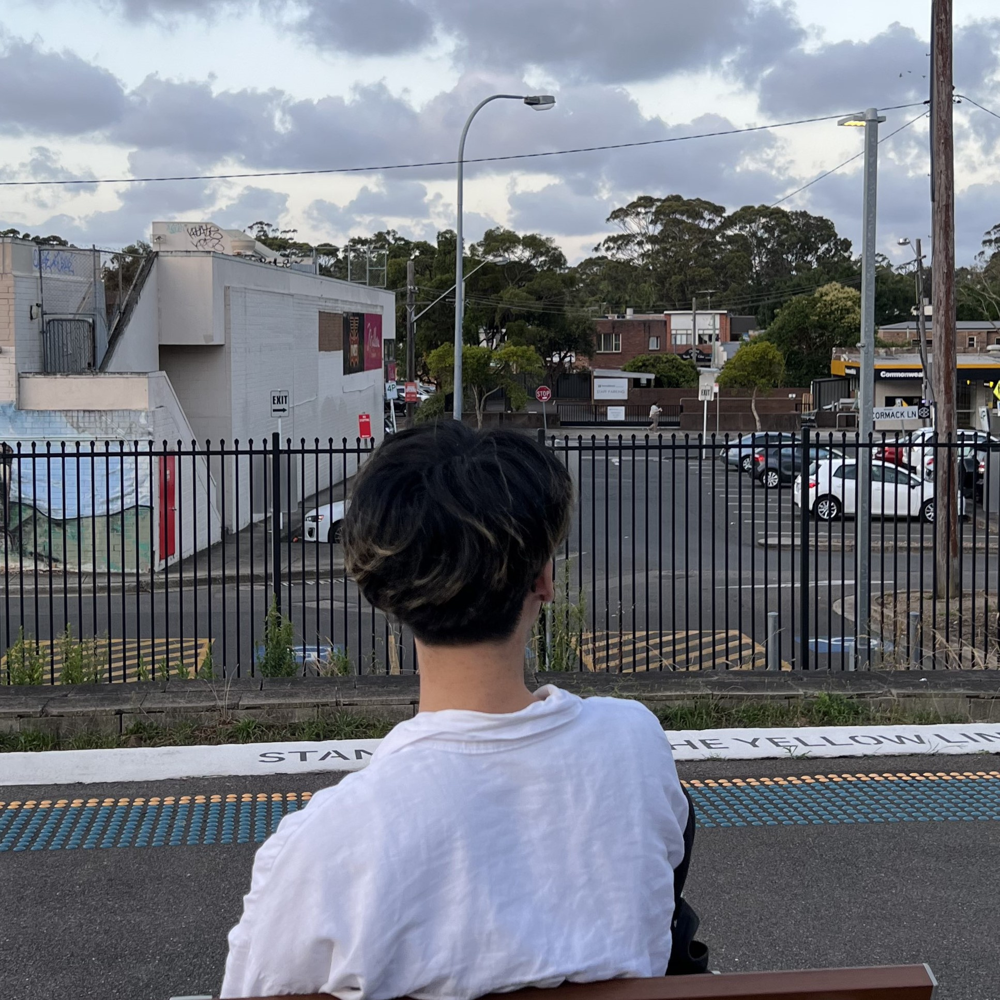

Hello, my name is
Jo Wu
A part-time
student.
coder.
designer.
coder.
designer.
I'm a full time 3rd Year Computer Science
student with a
passion
for all things code and design related. I look to challenge myself and learn along the way.
Love what you do;
Do what you love.
Do what you love.
— Wayne W. Dyer
01.
About Me
Hello! My name is Jo, I consider myself a designer and a coder. Although I thoroughly enjoyed art and deisgn
since I was a toddler, I chose to pursue Computer Science. Because of computer games I was always intrigued
by the engineering of said programs and applications.
Throughout my courses I have realised that art and coding are not contrasts (as I had thought); both require me to start with a base and build up to a self rewarding product . As such, I currently have the privilege to work for a small business as a casual website designer while studying and working on personal projects.
At the moment, I am planning to make a Chrome Extension and an aesthetic and smooth Pokedex search using PokeAPI!
Throughout my courses I have realised that art and coding are not contrasts (as I had thought); both require me to start with a base and build up to a self rewarding product . As such, I currently have the privilege to work for a small business as a casual website designer while studying and working on personal projects.
At the moment, I am planning to make a Chrome Extension and an aesthetic and smooth Pokedex search using PokeAPI!

Skills: (most proficient ones)
HTML & CSS
Python
JavaScript
ReactJS